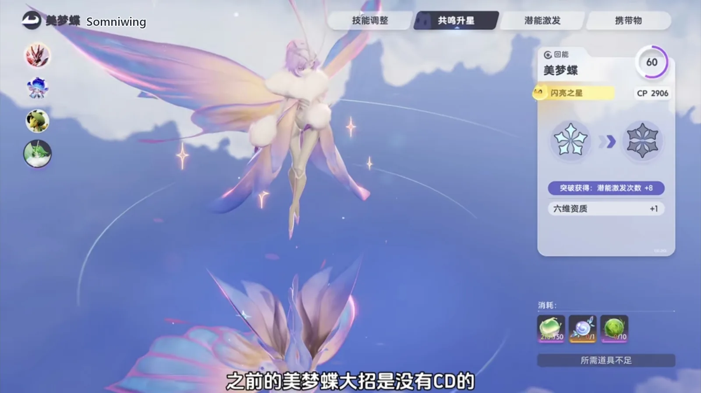
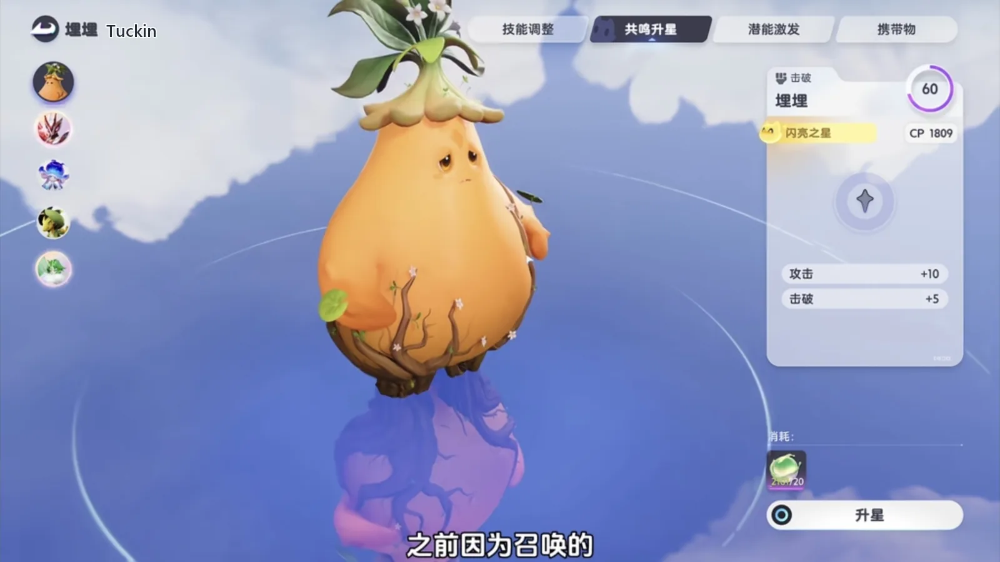
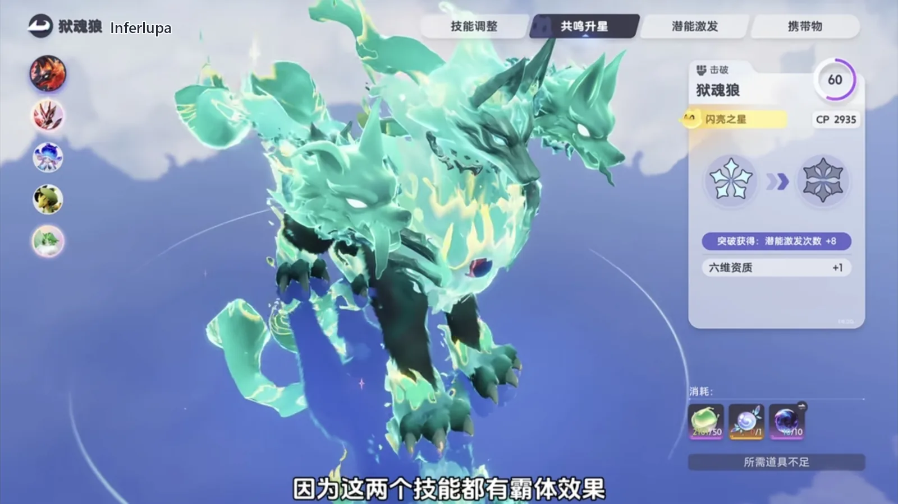
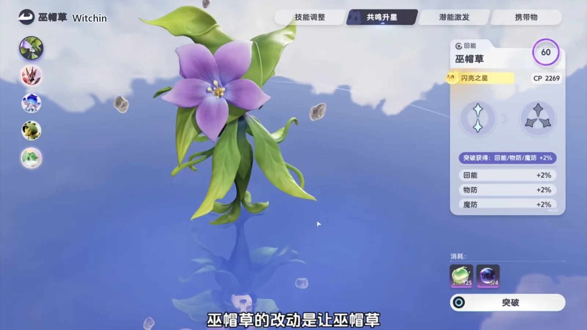
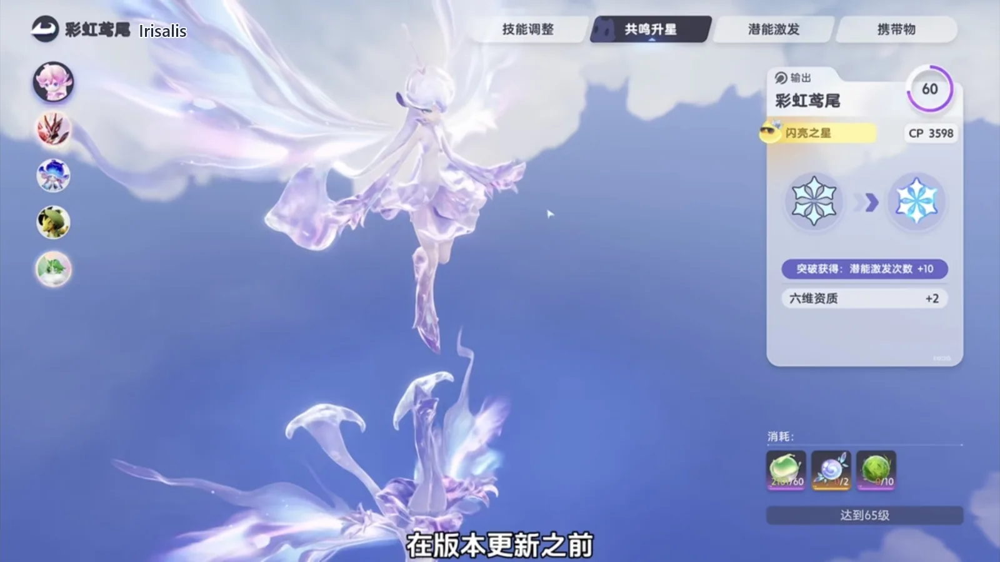

Home首页 / Guides攻略 / The Aniimo Update: Forty-Plus Creatures Changed, and Only a Few Things Matter《伊莫》新版本改动：四十多只伊莫改过，真正重要的就这几条
Checked核对于 November 2, 20262026 年 11 月 2 日
The Aniimo Update: Forty-Plus Creatures Changed, and Only a Few Things Matter《伊莫》新版本改动：四十多只伊莫改过，真正重要的就这几条
More than forty creatures moved in this patch. Which change retires a build, which party it drags down with it, and the order to rebuild in before the patch lands.新版本动到的伊莫超过四十只。哪几处改动会拆掉一套打法、牵连哪套阵容，以及上线前按什么顺序重配。
More than forty creatures were touched in this update, and several parties changed shape along with them. The vitality build that used to work is gone, the fire party needs a different Regen slot, and the Egg Heist run that leaned on endless rolling is gone too. The changelist is long; only three things need your hands — what changed, which build it drags down with it, and what to do next.新版本动到的伊莫超过四十只，几套队伍的骨架也跟着换了一遍。之前能跑通的活力流不能再用，火队的回能位得换人，抢蛋那套靠无限翻滚的玩法同样作废。改动清单很长，真正要你动手的只有三件事：哪一处变了、哪套阵容被牵连、接下来怎么补。
The way a party is built has not changed: pick the main DPS and the Break slot first, then fill Regen and Support. What changed is who is available. A fire party is still a fire party, but its Regen slot moves from Somniwing to Flamerion; the vitality build led by Tuckin is simply over, now that the summon's health is back to normal. Get the skeleton right first, and the numbers come after.组队的思路没变，还是先定主 C 和击破位，再补回能和辅助。变的是可选的人。同样是火队，回能位从美梦蝶换成幻焰灵；同样是埋埋带队的活力流，召唤物血量一回调，这套打法直接退出。骨架换对了，数值才轮得到谈。
Somniwing's ultimate has a cooldown now — the fire party's Regen slot goes to Flamerion美梦蝶的大招补上了 CD，火队的回能位换幻焰灵
Somniwing (wind · grass · Regen) used to have no cooldown at all on its ultimate — you could cast it back to back with no gap, which was a bug in the end. The live build has the cooldown in place, so it can no longer be thrown out one after another the way it used to be.美梦蝶（Somniwing，风 · 草 · 回能）的大招以前是没有 CD 的，连着放也不会有间隔，本质上算一个 bug。正式服现在把 CD 实装，它不能像从前那样一串接一串地砸下去了。
The fire party takes the biggest hit. Move its Regen slot from Somniwing to Flamerion (fire · Regen): it does the same job and stacks layers as it goes, so the party's damage rhythm does not break. The bug was never going to survive; changing the fire party's Regen slot now is less work than doing it after the patch lands.受影响最大的是火队。回能位可以从美梦蝶换成幻焰灵（Flamerion，火 · 回能）：一样负责回能，还能叠层数，队伍的输出节奏不会断。这个 bug 本来就留不住，火队早点把回能位换掉，比版本上线之后再改省事。

Hummin: the summon's health is back to normal, and Tuckin's vitality build is out走调草：召唤物血量回调，埋埋的活力流退场
When Hummin (grass · Break) is summoned out by the Highland and Umbral forms, its health is back to a normal value. The summon's health had a bug, and the vitality build Tuckin (grass · Break) ran through it was doing absurd damage. With that cut, the Tuckin lineup built on the repair matrix cannot be used any more — it goes back to an ordinary party.走调草（Hummin，草 · 击破）被高地形态和幽黯形态召唤出来时，生命值回调了。之前召唤物的生命值有 bug，埋埋（Tuckin，草 · 击破）靠它打出的活力流伤害高得离谱。这一刀落下来，埋埋搭修复矩阵的那套就不能再用，得换回正常阵容去打。
That is the whole difference. The vitality build feeds on the summon's health; once the health is normal, the damage falls back where it belongs. Tuckin itself is not dead — it just cannot be the endless damage core any more.打法的差别就在这儿：活力流吃的是召唤物那口血，血量一正常，伤害跟着回到该有的位置。埋埋本身没废，只是不能再拿它当无限续的输出核心。

Fulmintis swings Light now, and can take on the dark Holo-Battle Sim电刺螳螂改打光伤，能去打暗全息训练了
Fulmintis (lightning · DPS) has an upgraded light blade that used to be identical to its upgraded lightning blade — two skills that hit for exactly the same thing. In this version the light blade deals Light damage instead, so one skill set now carries two elements.电刺螳螂（Fulmintis，电 · 输出）的强化光刃，以前和强化电刃没有任何区别，两个技能打出去是一样的。新版本里强化光刃会变成光元素伤害，一套技能组从此有了两种属性。
That is a straight gain for Fulmintis: it can go and take on the new version's dark Holo-Battle Sim. The other side of it: PTC's core skill raises Lightning damage crit rate, and with the element changed that line does nothing — the party around it has to be rearranged.这件事对电刺螳螂是实打实的收益，它能去打新版本的暗全息训练。反过来，PTC 的核心技能加的是电元素伤害暴击率，换了属性之后这一条就用不上了，配队得重排。
Inferlupa and Ignitis: two super-armour dashes pushed toward PVP狱魂狼与淬刃螳螂：两个带霸体的突袭，被推向 PVP
Inferlupa (fire · dark · Break) has the wolf dash cost cut from 20 to 15, and its cooldown moved from 1 second to 20; Ignitis (dark · DPS) has its flame dash hitting harder, with its cooldown moved from 1 second to 10. Both skills carry super armour, and this set of changes is aimed at PVP.狱魂狼（Inferlupa，火 · 暗 · 击破）的炎狼突击，消耗从 20 点降到 15 点，CD 从 1 秒变成 20 秒；淬刃螳螂（Ignitis，暗 · 输出）的火焰突袭伤害提高，CD 从 1 秒变成 10 秒。两个技能都带霸体，这一组改动是冲着 PVP 去的。
Inferlupa is the one that suffers. It cannot hold the fire party's Break slot any more: an ice creature only breaks fast under a fire Break unit, and a 20-second cooldown cannot do that job. Keep the dash on the bar if you like, but it is an auxiliary skill at best now.影响比较大的是狱魂狼。它不能再占火队的击破位：冰系的怪得靠火系击破位才破得快，CD 拉到 20 秒，这活儿就干不了了。炎狼突击留在手上，最多当个辅助技能用。

Witchin: attack finally counts, and every skill hits 20% harder巫帽草：攻击终于进结算，全技能威力加两成
Witchin (dark · grass · Regen) now has its attack stat counted in damage. Before, spending Capability Awakening points on attack changed nothing, and this was the reason. The same version raises its base stats and takes every skill's power up by 20% — all of them, not a subset.巫帽草（Witchin，暗 · 草 · 回能）的攻击属性现在参与伤害结算了。之前潜能激发点了攻击值却不生效，问题就出在这儿。同一版里它的种族值提高，技能威力整体加 20%，而且包含所有技能。
That is two changes at once: the sheet goes up, and the attack points already spent finally do something. If a Regen slot can spare room for damage, this is the ready-made answer.这是双份的改动：面板上去了，之前白点的那些攻击也有了去处。回能位里愿意留一个带输出的，它就是现成的选择。

Panpanta: the endless stamina is gone, and the Egg Heist party changes胖胖獭：无限体力没了，抢蛋阵容得换
Panpanta's (water · Break) endless-stamina bug is fixed. The Egg Heist run that kept rolling forever on its water-gathering roll no longer works, and that party needs to be built again a different way.胖胖獭（Panpanta，水 · 击破）的无限体力 bug 修好了。以前靠集水翻滚在抢蛋里一直滚下去，这套玩法现在行不通，抢蛋阵容需要另配一套。
Without the endless stamina, Panpanta is not as comfortable to use. Its value in that mode was the roll that never stopped; with the roll cut, something else has to cover the Break slot.没有无限体力的胖胖獭，用起来没那么顺手。它在这套玩法里的价值，本来就是那口气不断的翻滚；翻滚断了，就得拿别的手段顶上击破位。
Resets and compensation: the materials come back, and old Irisalis gets its potential重置与补偿：练错的材料能拿回来，老鸢尾补资质
Of the creatures named above, the ones changed most can have their training reset, once per Aniimo. The reset covers the experience items, Resonance, Body-and-Mind training, Capability Awakening and Capafruit — every one of those comes back.上面点名的这几只里，改动幅度最大的都能重置养成，一只伊莫限定一次。重置范围包括经验道具、共鸣、身心、潜能激发和潜能果实，这些道具全部返还。
Irisalis (grass · DPS) is a separate handout. Anyone who already had one before the update gets an item in the mail; using it takes Potential to double ten, with every other line at five. Where items had already been spent raising its Potential, the overflow comes back by mail as well.彩虹鸢尾（Irisalis，草 · 输出）是另一份补给。版本更新之前已经拿到它的玩家，会收到邮件发来的道具，用了之后资质变成双十，其余各项全部是五；之前用道具提升过资质的，溢出的那部分也会通过邮件返还。

More thunderstorms, and three regions that are easier to farm雷雨天变多了，三个地区更好刷
Map weather changed as well: thunderstorms are more likely and clear skies less so. The most direct effect is in the Sea of Flowers, where the 灰亚火炮 only comes out in a thunderstorm — and the same is true of Beast Fang Ridge and Echoback Landing.地图天气也调了：雷雨天的概率增加，晴天减少。影响最直接的是鸢尾花海，这里要雷雨天才能拿到灰亚火炮，狼牙岭和鲸落浅滩也一样。
Thunderstorms matter in those three regions and used to show up rarely. With the odds raised, camping the weather is finally less of a chore.这三个地区的雷雨天本来就重要，刷得也少。更新之后这三个区域的雷雨天刷新概率会提高，蹲天气这件事总算没那么熬人。
The quality-of-life list: not worth memorising优化清单：不必逐条记
The quality-of-life part is a mixed bag, so it is not listed line by line. Combat, the homeland, the chat interface, appearance dyeing, story guidance, the new capital, and controller and mobile controls are all in it, along with a new Egg Heist series and a batch of bug fixes. All of it ships with the next version.优化这部分内容很杂，不一条条列。战斗、家园、聊天界面、外观染色、剧情引导、新之都、手柄和移动端的操作都在里面，还有抢蛋的全新系列和一批 bug 修复。这些都会随下个版本一起上线。
When you find a screen in the game that does not look the way it used to, that is the quality-of-life work. There is nothing to prepare for it; you will run into it as you play.等你在游戏里发现某个界面跟以前不一样了，那就是优化。这一块不用提前准备什么，玩的时候自然会碰到。
What to do before the version lands上线前先做这几步
Move the skeleton first, and the numbers second.先动骨架，再动数值。
In the fire party, move the Regen slot from Somniwing to Flamerion — that is the widest-reaching change, so do it early. Take the Tuckin repair-matrix vitality build apart and go back to a normal party; build the Egg Heist team again without the endless stamina. With the skeletons swapped, come back to the plain buffs like Witchin and put the damage back.火队把回能位从美梦蝶换成幻焰灵，这是影响面最大的一处，早换早稳。埋埋搭修复矩阵的活力流直接拆掉，换回正常阵容；抢蛋那边另配一套不依赖无限体力的队。骨架换完，再回头看巫帽草这种纯加强的个体，把伤害补回来。
Resets come last. Once the new parties are settled, reset the ones that were trained the wrong way: the experience items, Resonance, Body-and-Mind training, Capability Awakening and Capafruit all come back, and the materials go straight into the new team. Do it the other way round, and the materials go back into a party you are about to take apart.最后才是重置。等新阵容定下来，再把练错的那几只重置掉，经验道具、共鸣、身心、潜能激发、潜能果实会全部退回，材料正好投进新队伍。顺序倒过来先重置，反而容易把材料又喂回一套要拆的队伍里。
More guides相关攻略
- Aniimo Tier List: The 19 Creatures to Build First《伊莫》强度巅峰榜：几百小时之后，新手先练这 19 只 — A personal tier list of 19 Aniimo, grouped by the job each one does — damage, break, healing and support, energy regen — with every element and role checked against the game's own records and the ranking left as my own.一份个人向的强度榜单，按输出、击破、治疗辅助、回能分成四组。每只都逐一对过游戏里的属性与定位，哪一段是能查的、哪一段是我自己的判断，文中分开写。
- Aniimo's Water Team: Three of the Four Are There to Set Up Sherro's One Sword《伊莫》水系配队：一剑流星骑士，三只铺路只为最后那一剑 — A four-Aniimo Water party built around one damage dealer: what Piopiota, Panpanta and Turbo each lay down before Sherro comes in, and the order to switch them in.一套四只的水系阵容，全部围绕一个输出位搭：星骑士进场之前，漂漂獭、胖胖獭、蓬蓬羊各负责什么，以及换人的顺序。